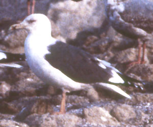
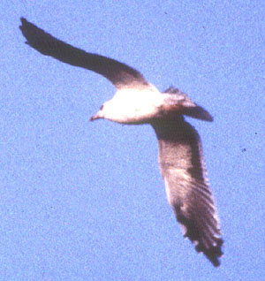

| These photographs accompany records that have been recently submitted to the committee. This record
was NOT ACCEPTED.  Slaty-backed Gull Larus schistisagus 21 Feb 98, Johnson's Landing, Salton City, IMP 1998-050 © 1998 Matt T. Heindel Back to CBRC Rare Bird Photos |
|  Slaty-backed Gull Larus schistisagus 21 Feb 98, Johnson's Landing, Salton City, IMP 1998-050 © 1998 Matt T. Heindel Back to CBRC Rare Bird Photos |